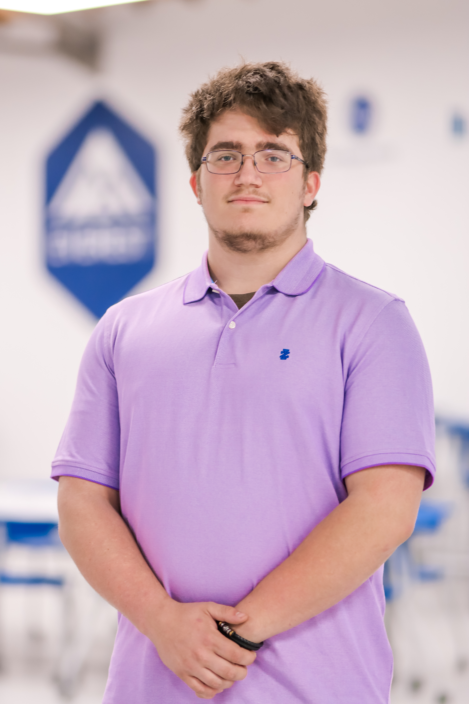
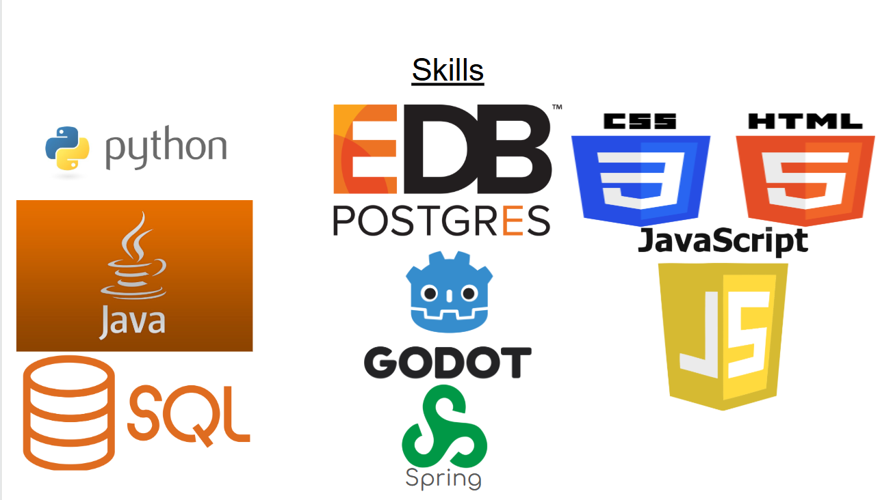

Jason
Woodruff

My name is Jason Woodruff, and I am a graduate of Base Camp Coding Academy. I have always been interested in technology and wanted to learn how to code. Growing up, I moved schools a few times, so I didn’t have many opportunities to explore programming or take coding classes. After graduating high school, I had the opportunity to attend Base Camp Coding Academy, where I was able to turn my interest in coding into real skills and experience. During my time there, I learned about software development, worked on projects, and developed my problem-solving and programming abilities. I’m proud of what I accomplished at Base Camp and excited to continue growing as a developer and pursue a career in technology.
Work Experience
Waiter — Casa Mexicana
2 Years
Provided friendly and professional customer service in a fast-paced restaurant environment.
Managed multiple tables while ensuring accurate and timely food and beverage service.
Communicated effectively with customers and team members to create a positive dining experience.,
Manager — Ray Brothers Auto
2 Years
Managed daily operations and ensured efficient workflow throughout the business.
Supervised employees, delegated responsibilities, and maintained a productive work environment.
Assisted customers, handled scheduling, and helped resolve issues professionally.
Demonstrated strong leadership, organization, and problem-solving skills.
Education
Lafayette High School — Oxford, MississippiHigh School Diploma
Base Camp Coding Academy
Software Development & Coding Program Graduate
